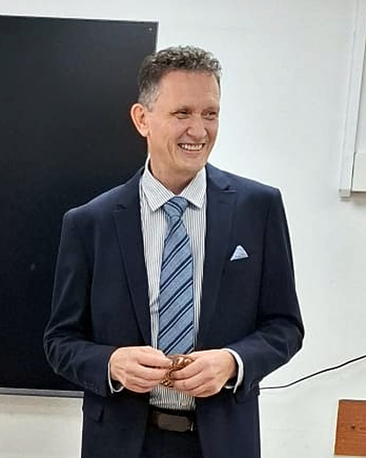

קרן פרידמן
מנחת קבוצות מוסמכת (בעלת תעודה) בנושא זוגיות ומערכות יחסים על בסיס חוכמת הקבלה.
בעלת מעל 8 שנות לימוד וחקר בתחומי הקבלה והמודעות, וניסיון של 3 שנים בהנחיית קורסי זוגיות לפנויים ולנשואים. במקצועה הראשון מורה למוזיקה, עם ניסיון עשיר של שנים בעבודה עם אנשים.
בסדנאות היא מחברת בין עומק רוחני לחיי היומיום, ומעניקה כלים מעשיים לתקשורת מקרבת, להבנת הצרכים ההדדיים ולבניית זוגיות שיש בה גם קרבה אמיתית וגם מקום לעצמך.
הסיפור של קרן
ההכשרה של קרן

אלכסיי ירילוביץ
מומחה לזיהוי דפוסי חשיבה ותקשורת במערכות יחסים, מפתח גישת "הנדסת התודעה" ומאסטר מוסמך בתטא הילינג.
משלב 25 שנות ניסיון כמהנדס תוכנה בהייטק עם מעל 9 שנות ניסיון מעשי בליווי אנשים בפתרון קונפליקטים, שחרור חסמים רגשיים ובניית תקשורת מקרבת (בוגר בית הספר לחשיבה ותקשורת "אפיירון" והכשרת Super Jump).
אבא לשלושה, בזוגיות שנייה. בסדנאות הוא מביא מבט מערכתי, אנושי ובגובה העיניים שמאפשר לזהות מה מפעיל אותנו בתוך הקשר — ולהחזיר לעצמנו את חופש הבחירה בלי לאבד את עצמנו.
הסיפור של אלכסיי
ההכשרה של אלכסיי